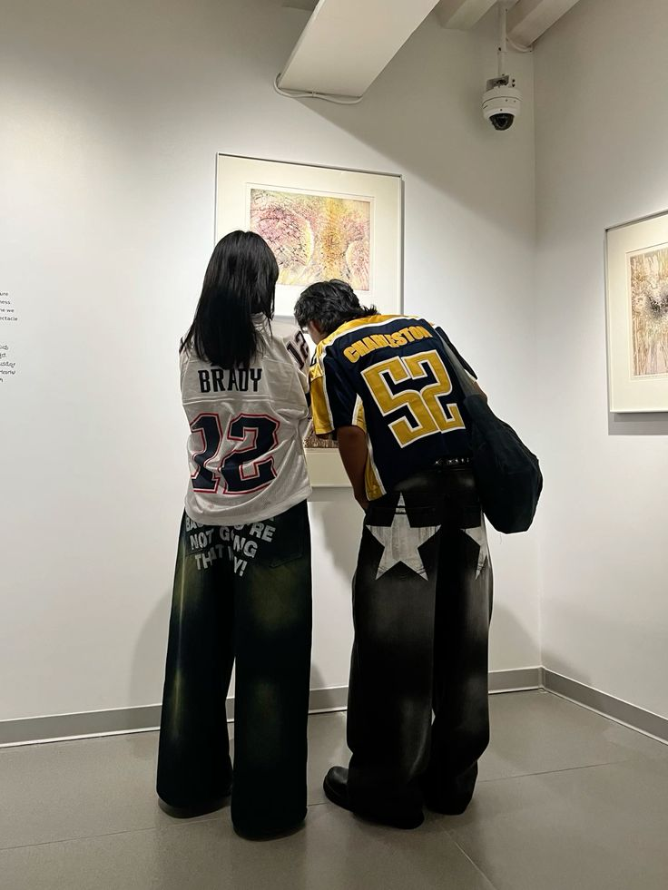

Bloke Core Aesthetic
Overview
Bloke Core is a newer, emerging aesthetic and style. It is a streetwear fashion trend that mixes casual clothing with vintage soccer wear. It takes heavy inspiration from the 90s, where footballers would wear their soccer wear inside and outside of the field. This aesthetic resembles the Football fashion movment, the Casuals. This style is very androgynous, with both men and women exhibiting similar, if not the same, silhouettes and pieces. Key clothing items are vintage jerseys, baggy and worn (and preferably vintage as well) denim, and flat, indoor soccer cleat resembling footwear.